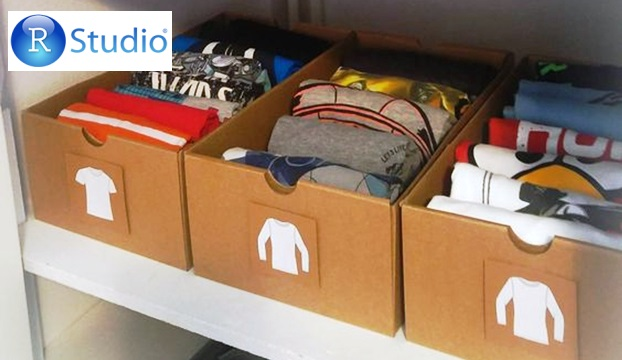

Divide y Reinarás
Segmentación de clientes utilizando modelos de machine learning.

Si tenés la suerte de tener demasiadas prendas para tan poco espacio en el guardarropas entonces estarás familiarizado con las técnicas de agrupamiento, habrás buscado la forma de combinar en cada cajón o sector aquellas que se relacionan y tienen algo en común. Pero cuando los atributos que definen los objetos a clasificar no son tan relacionables a simple vista es cuando necesitamos técnicas más potentes. Veamos como el aprendizaje no supervisado nos ayuda a resolver este tipo de problemas.
[Leer más]
Tensiones entre teoría y realidad
Utilizando la inferencia estadística para refutar un supuesto establecido.
Dos días al año las actividades del sector de almacenamiento y procesamiento de materiales son distintas a lo habitual. En estos días todo el personal está abocado a hacer un relevamiento completo del stock. Lo que importa es conocer con la mayor precisión posible cuántas toneladas de material hay en el almacén y para lograr esto se deben parar muchos procesos productivos por un tiempo considerable. ¿Es el procedimiento habitual el correcto o hay mejores alternativas?
[Leer más]
Cuando se te escapa la tortuga
Prediciendo qué clientes tienen más probabilidad de prescindir de nuestros servicios.
Uno de nuestros clientes que durante 12 años ha pagado cada uno de los servicios prestados a término recibe un llamado en el cual se le notifica que ha sido beneficiado por su antigüedad en la compañía y que en una fecha específica un operario pasará por su casa a cambiarle su viejo router WiFi por uno nuevo a pesar de que este sigue funcionando correctamente. Un mes después de la fecha acordada el operario aún no ha pasado y el cliente recibe un cargo extra por no haber entregado el viejo router que estaba en consignación y, a pesar de los reclamos, no consigue que este sea anulado. Cuando finalmente contactamos al cliente para resolver el conflicto este ya se ha pasado la competencia. ¿Qué ha fallado y por qué estamos siempre un paso por detrás?
[Leer más]